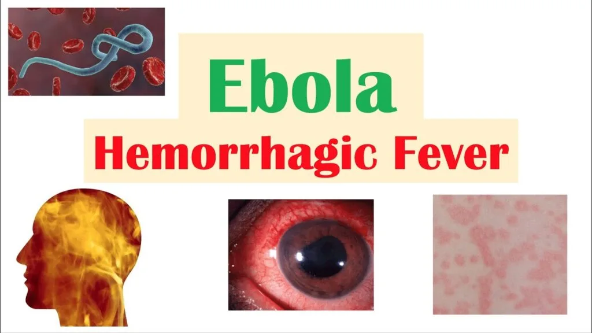

Expanded Nursing Uganda Explanation
Hemorrhagic fevers should be reviewed through safe maternal and newborn assessment, early recognition of danger signs, respectful communication and timely referral. Connect the definition to vital signs, bleeding, fetal or newborn wellbeing, patient education and local protocol requirements.
Contents, 15 sections (tap to expand)
01 HAEMORRHAGIC FEVERS
Ebola and Marburg
- Ebola and Marburg are severe zoonotic multisystem febrile diseases caused by RNA viruses. They are notifiable diseases.
02 Ebola Virus:
- Morphology : The Ebola virus is filamentous, often resembling a “U” or “S” shape. It measures approximately 2 μm (micrometers) in length and 70-80 nm (nanometers) in diameter. It has an internal structure (nucleoprotein core) enclosed within an external envelope studded with numerous glycoprotein spikes.
- Multiplication : The virus replicates by budding from its internal structures.
Types of Ebola Viruses:
Ebola Virus (EBOV) : This is the species most commonly associated with severe outbreaks in humans.
- EBO-Zaire (EBO-Z) : This subtype has a high fatality rate, averaging around 89%.
- EBO-Sudan (EBO-S) : This subtype has a fatality rate of 41.65%, although this can vary depending on factors like treatment and location.
Vectors :
- Mosquitoes and Termites : While there have been theories suggesting these insects could play a role in transmission, there is no definitive evidence to support their role as vectors for Ebola.
- Bats : The most likely primary reservoir for Ebola viruses. They can harbor the virus without showing symptoms and transmit it to other animals or humans.
- Dogs : While some sources mention dogs, there is no clear evidence to suggest they are a significant reservoir for Ebola.
03 Transmission :
Human-to-Human :
- Direct contact with infected bodily fluids, such as blood, vomit, feces, urine, and saliva.
- Contact with contaminated materials like clothing, bedding, needles, and medical equipment.
- Sexual contact with a survivor who is still shedding the virus in semen (this can last for months after recovery).
Animal-to-Human : Contact with infected animals (particularly primates like chimpanzees and gorillas) or their bodily fluids.
Mosquitoes : As mentioned above, mosquitoes are not considered reliable vectors for Ebola virus transmission.
04 Pathology :
The Ebola virus affects multiple tissues throughout the body, not just a specific organ. It causes widespread damage, including:
- Necrotic Lesions: The virus leads to cell death (necrosis) in various organs, affecting their functionality.
- Immune System Suppression: Ebola weakens the immune system, making individuals vulnerable to other infections.
Incubation Period:
- Primary Infection: The incubation period typically ranges from 2 to 21 days after exposure.
- Secondary Infection: For transmission from human to human, the incubation period is the same, 2 to 21 days.
Causes :
Ebola Virus : The causative agent is the Ebola virus, a member of the Filoviridae family. There are five known species of Ebola virus:
- Zaire ebolavirus (responsible for the most severe outbreaks)
- Sudan ebolavirus
- Reston ebolavirus (not known to cause disease in humans)
- Taï Forest ebolavirus
- Bundibugyo ebolavirus
Marburg : Marburg virus
05 Risk Factors :
- Communities Around Game Parks: Proximity to wildlife increases the risk of exposure.
- Endemic Areas : Regions with a history of EVD outbreaks.
- Cultural Practices: Burial rituals involving close contact with the deceased can facilitate transmission.
- Poor Infection Control : Inadequate sanitation and hygiene practices in healthcare settings can increase the spread.
- History of Exposure: Contact with infected individuals within 2-21 days prior to symptom onset (e.g., sexual partners, breastfeeding mothers).
- Contact with Infected Animals : Handling infected animals (like monkeys, bats, and infected game meat).
06 Clinical Features:
Early Signs (Non-Specific):
- Sudden Feve r: A rapid onset of high fever (often exceeding 101.5 °F / 38.6 °C).
- Weakness : General feeling of weakness and exhaustion.
- Headache : Intense headache.
- Muscle Pain : Pain in muscles and joints.
- Loss of Appetite : Decreased appetite or inability to eat.
- Conjunctivitis : Inflammation of the conjunctiva (white part of the eye).
Late Signs :
- Diarrhea : Profuse diarrhea, sometimes with blood.
- Vomiting : Severe vomiting.
- Mucosal and Gastrointestinal Bleeding : Bleeding from the nose, gums, eyes, and rectum.
- Chest Pain : Pain in the chest area.
- Respiratory Distress : Difficulty breathing.
- Circulatory Shock: Low blood pressure and impaired blood flow.
- CNS Dysfunction: Confusion, seizures, and coma.
- Miscarriage in Pregnancy : EVD can cause miscarriage or stillbirth in pregnant women.
- Elevated AST and ALT: Elevated levels of liver enzymes, indicating liver damage.
- Kidney Injury : Damage to the kidneys, potentially leading to kidney failure.
- Electrolyte Abnormalities : Imbalances in electrolytes (minerals like potassium and sodium) in the body.
Other clinical presentations include;
- Sudden Onset : Symptoms usually appear abruptly.
- Severe Headache : Intense headache is a common initial symptom.
- Myalgia and Fever: Muscle pain (myalgia) and high fever (often exceeding 38.5 °C).
- Conjunctival Inflammation : Inflammation of the conjunctiva (white part of the eye).
- Gingival Bleeding : Bleeding from the gums.
- Sore Throat: Sore throat with associated chest pain.
- Abdominal Pain: Pain in the abdomen.
- Nausea, Vomiting, and Diarrhea : These symptoms are prominent features of EVD, with diarrhea often being profuse and watery.
- Signs of Dehydration : Dehydration can develop due to fluid loss from vomiting and diarrhea.
- Severe Bleeding : Internal and external bleeding may occur from the gastrointestinal tract, gums, nose, and other orifices. This typically develops between the 5th and 7th days.
- Morbiliform Rash : A rash similar to measles may appear on the 7th day.
- Neurological Manifestations: Neurological complications such as psychosis and hemiplegia (weakness or paralysis on one side of the body) can occur.
- Death : Death often occurs around the 9th day, but can happen between the 2nd and 21st days.
Note: Hemorrhage is not always a prominent feature of EVD. It’s important to remember that EVD symptoms can vary significantly.
07 Differential Diagnosis:
- Malaria : A parasitic disease that also causes fever, headache, and muscle aches.
- Meningitis : Inflammation of the membranes surrounding the brain and spinal cord.
- Shigellosis : A bacterial infection causing diarrhea, abdominal cramps, and fever.
- Typhoid Fever : A bacterial infection causing high fever, headache, and constipation.
- Anthrax : A bacterial infection causing skin lesions, fever, and respiratory problems.
- Sepsis : A serious bacterial infection causing fever, chills, and rapid heart rate.
- Viral Hepatitis : Inflammation of the liver caused by viruses like hepatitis A, B, or C.
- Dengue Fever : A viral infection transmitted by mosquitoes, causing fever, headache, and muscle pain.
08 Investigations:
Blood Sample for Specific Testing : Blood samples from suspected EVD cases should be collected by trained healthcare professionals wearing proper PPE.
- Laboratory Testing : The blood sample needs to be sent to a reference laboratory for specific tests to identify the Ebola virus.
- Real-Time PCR: This is the preferred method for detecting Ebola virus.
- Antigen and Antibody Detection : ELISA (enzyme-linked immunosorbent assay) and other antibody tests can identify Ebola virus antigens and antibodies.
Postmortem : If an individual dies from EVD, postmortem examination is critical for confirmation and to prevent further spread.
Notification : Immediately notify the district surveillance focal person if you suspect a case of EVD.
09 Management
Management Aims:
- Fluid Replacement: Maintain adequate hydration to compensate for fluid loss.
- Prevention of Spread : Isolate the patient and implement strict infection control measures.
- Conservation of Energy : Provide rest and supportive care to conserve energy.
- Symptom Relief: Administer medications to manage symptoms like fever, pain, and vomiting.
Specific Management:
1. Admission : Admit the patient to an isolated room in a medical ward, providing complete bed rest.
- Bed Preparation: Use a freshly prepared bed, with a comfortable position for the patient (supine or semi-recumbent depending on their condition).
2. Protection :
- Handwashing : Strict handwashing before and after attending to the patient.
- Isolation : Isolate the patient in a designated room, and implement barrier nursing techniques. Healthcare workers and patient attendants should wear gowns, gloves, goggles, and gumboots to prevent contact with bodily fluids.
- Identification Tag: Place an “INFECTIOUS” tag on the door to alert others about the infectious nature of the room.
3. Fluid Replacement: Administer intravenous fluids (N/S, RL, and Dextrose 5%) according to the doctor’s prescription.
4. Hygiene :
- Patient Hygiene : Maintain cleanliness of the patient’s skin, secretions, and stool. Disinfect with bleach solutions before disposal.
- Bed Pans : Scrub bed pans thoroughly with strong detergent, rinse, and dry.
- Patient’s Orifices: Wash and dry the patient’s orifices. Apply perineal pads if needed for profuse diarrhea.
- Linens : Disinfect linens in a bleach solution for at least 6 hours. Label and transport them in “infected linen” bags to be sluiced, boiled, dried, and ironed.
- Room Disinfection : Mop the room, scrub the floors and walls, disinfect lockers, and wash and boil patient utensils for at least 10 minutes.
- Refuse Disposal : Place food and hospital refuse in polythene bags and incinerate.
5. Diet : Provide a fluid diet in the acute stage, primarily through IV fluids and oral fluids as much as possible.
6. Terminal Disinfection : Thoroughly disinfect the room and all contaminated materials after the patient is discharged.
7. Notification : Report the case to health authorities to inform the public health system about the outbreak.
Health Education:
- Patient Attendants : Educate patient attendants about the infection, its mode of transmission, and prevention measures.
- General Public : Inform the general public about the disease, its signs and symptoms, and preventative measures.
- Patient Care: Ensure the patient feels supported and understood, preventing isolation and stigma.
10 Prevention:
- Avoid Contact: Minimize contact with the patient’s blood and secretions.
- Personal Protective Equipment: Wear proper PPE (gowns, gloves, masks, eye protection) when providing care.
- Safe Burial Practices: Use safe burial practices to prevent transmission during funerals.
- Vaccination : The Ebola vaccine is available and should be considered for high-risk individuals.
- Isolation : Isolate infected individuals in designated Ebola treatment centers.
- Contact Tracing : Identify and monitor individuals who have come into contact with infected persons.
11 Prevention Complications:
- Shock : Monitor for signs of shock (low blood pressure, rapid heart rate, weakness, and cool, clammy skin).
- Organ Failure : Monitor for signs of organ failure (e.g., jaundice for liver failure, decreased urine output for kidney failure).
- Disseminated Intravascular Coagulation (DIC): Be aware of the signs of DIC (bleeding from multiple sites, bruising, and difficulty controlling bleeding).
- Meningitis : Monitor for signs of meningitis (stiff neck, headache, fever).
- Encephalitis : Monitor for signs of encephalitis (confusion, seizures).
- Secondary Infections : Monitor for signs of secondary infections (fever, cough, difficulty breathing).
- Psychological Trauma : Provide psychological support to patients and their families to address potential psychological trauma.
12 Nursing Uganda Clinical Lens
Use Ebola as a practical nursing topic, not only a memorized definition. Study medicines through indication, safety checks, expected response, adverse effects and patient teaching.
- What to understand first: define ebola, identify the normal or expected pattern, then explain what changes when the patient is unwell.
- Why it matters in care: the nurse must recognize risk early, explain findings clearly, document accurately and know when to escalate.
- How to revise it: connect each point to assessment, nursing diagnosis or care problem, intervention, rationale and evaluation.
13 Assessment Guide
- Diagnosis or reason for the medicine, allergies, pregnancy status and previous reactions.
- Current medicines, herbal products, renal or liver risk and baseline observations.
- Dose, route, timing, dilution, expiry date and documentation requirements.
14 Nursing Priorities, Rationales and Outcomes
- Apply the rights of medication administration and facility policy.
- Monitor therapeutic response and class-specific adverse effects.
- Educate the patient on purpose, timing, missed doses, warning symptoms and adherence.
The rationale for these priorities is patient safety: nursing actions should prevent deterioration, reduce discomfort, support recovery and create clear evidence for the next caregiver.
- Expected outcome: The medicine produces the intended effect without preventable harm, and administration is accurately documented.
15 Patient Teaching and Revision Check
- Explain ebola in simple language the patient or caregiver can repeat back.
- Teach warning signs, medicine or follow-up instructions, hygiene or lifestyle points where relevant.
- For exams, prepare a short answer using: definition, causes or risk factors, signs, assessment, management, complications and prevention.
- For ward practice, document baseline findings, actions taken, patient response and the plan for review.
Illustrations and Diagrams (2)


Related Video Lectures
Watch nursing lecture videos on YouTube for this topic. Opens in a new tab.
Watch on YouTubeExternal link: YouTube may use its own cookies and terms. Nursing Uganda is not affiliated with YouTube.